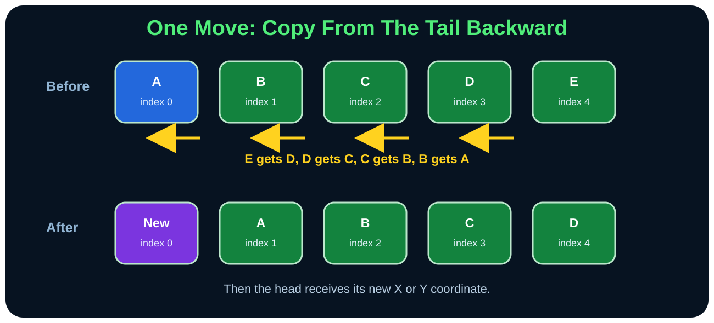
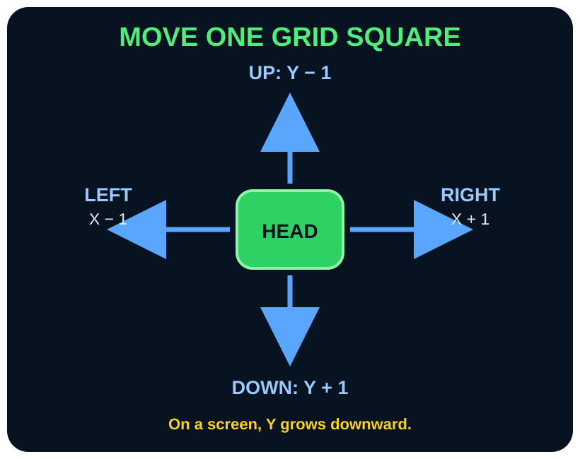
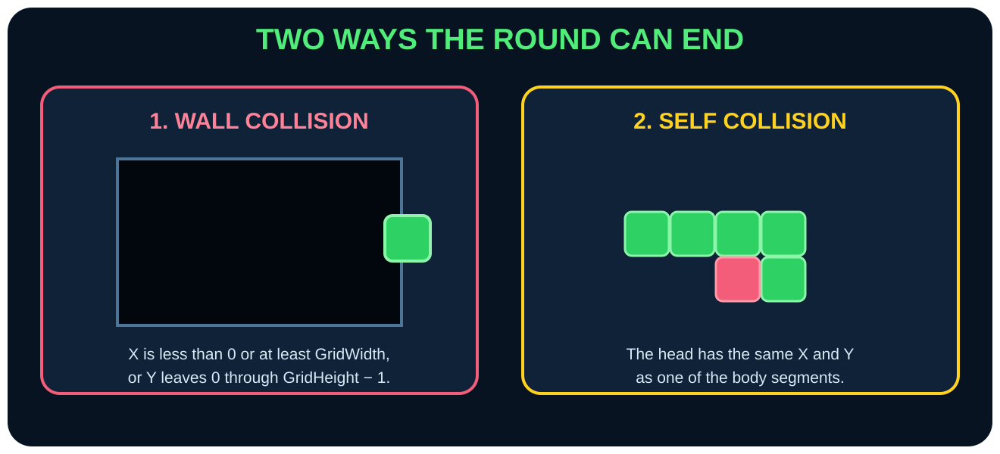
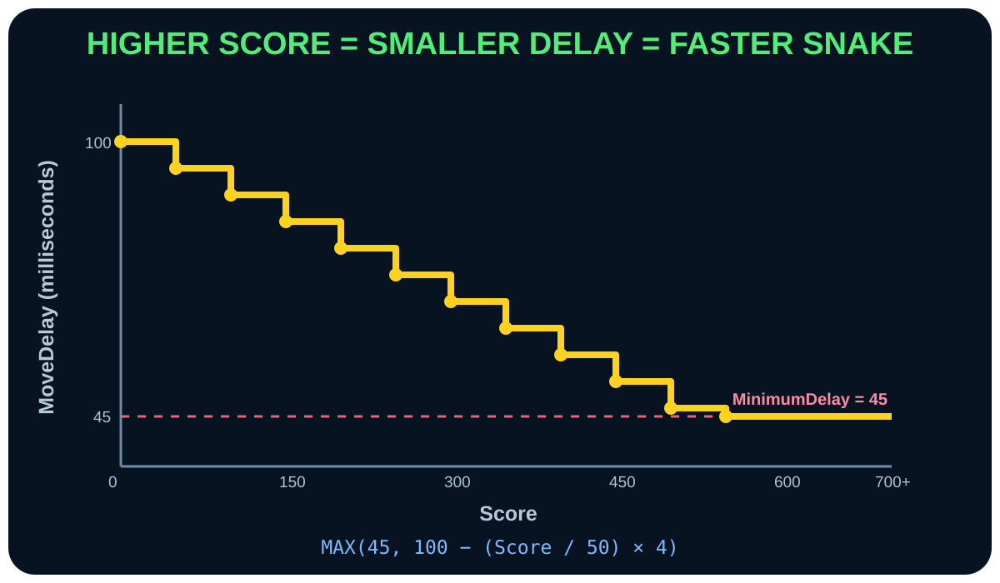

Paste checkpoint 6
Move, Collide, Grow, and Speed Up
MoveSnake is the heart of the rules. Build it in four small pieces inside one unfinished Sub.
Copy the body backward
Save the tail, then shift from the tail toward the head.
Sub MoveSnake()
Direction = NextDirection
TailX = SnakeX[Length - 1]
TailY = SnakeY[Length - 1]
For I = Length - 1 Down To 1
SnakeX[I] = SnakeX[I - 1]
SnakeY[I] = SnakeY[I - 1]
End For
If the loop copied forward, index 1 would receive the head, then index 2 would copy the already-changed index 1. The head coordinate would spread through the whole body. Down To prevents that.
Move the head one square
Exactly one coordinate changes by exactly 1.
If Direction = KEY_UP Then
SnakeY[0] = SnakeY[0] - 1
Else If Direction = KEY_DOWN Then
SnakeY[0] = SnakeY[0] + 1
Else If Direction = KEY_LEFT Then
SnakeX[0] = SnakeX[0] - 1
Else If Direction = KEY_RIGHT Then
SnakeX[0] = SnakeX[0] + 1
End If
Detect wall and body collisions
A collision is a Boolean fact: True or False.
Collision = False
If (SnakeX[0] < 0 Or
SnakeX[0] >= GridWidth Or
SnakeY[0] < 0 Or
SnakeY[0] >= GridHeight) Then
Collision = True
End If
For I = 1 To Length - 1
If SnakeX[0] = SnakeX[I] And SnakeY[0] = SnakeY[I] Then
Collision = True
End If
End For
Eat, grow, score, and schedule the next move
This final piece closes MoveSnake.
If Collision = True Then
Call EndRound()
Else If SnakeX[0] = FoodX And SnakeY[0] = FoodY Then
SnakeX[Length] = TailX
SnakeY[Length] = TailY
Length = Length + 1
Score = Score + 10
MoveDelay = Max(MinimumDelay, StartDelay - (Score / 50) * 4)
Play Sound "Assets\Eat.wav"
Call SpawnFood()
End If
NextMoveTime = Timer() + MoveDelay
End Sub
The eating sequence
- Restore the saved old tail as a new segment.
- Increase
Lengthby 1. - Add 10 points.
- Recalculate movement delay.
- Play Eat.wav.
- Spawn new food.
At score 250, what is MoveDelay?
250 / 50 = 5. Then 100 − (5 × 4) = 80 milliseconds.
Repetition builds memory
Reinforce what you learned
Say it again
Copy the body backward, move the head, check collisions, then grow and score when food is eaten.
Recall it
Why must the body-copy loop count Down To 1?
Check your answer
So later segments receive the old position of the segment before them instead of copying an already changed value.